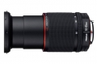
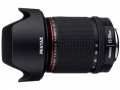

器材库 > APS画幅镜头 > DA 16-85/3.5-5.6ED DC WR

详细规格
镜头类型
标准变焦镜头
发布日期
2014-11-03
厂家推荐价格
750.00 （美元）
焦距
16mm-85mm
等效35mm画幅焦距
24.5mm-130mm
最大光圈
f/3.5-5.6
最小光圈
f/22-38
镜头结构
16片/12组
非球面镜片
3片
低/超低色散镜片
1片
光圈叶片
7片
最近对焦距离
35cm
最大放大倍率
0.26倍
滤镜口径
72mm
镜头卡口
Pentax AF
防抖
否
颜色
黑色
尺寸
78 x 94mm
重量
488g
天际行者2017-01-25 01:374.33 分
操作性 4.50耐用性 4.50性价比 4.50解像力 4.00色彩还原 4.50机械结构 4.00
gzfanco2015-07-12 21:464.25 分
操作性 4.50耐用性 4.50性价比 3.50解像力 4.00色彩还原 4.50机械结构 4.50
产品图 / 样片

评测 / 相关文章
该产品暂无存档的评测文章